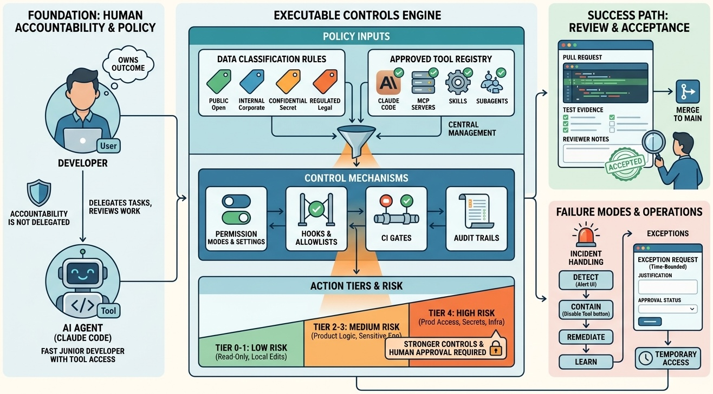

AI-Assisted Development
AI Coding Policy: Human Accountability with Executable Controls

Image generated by Google Gemini (gemini-3-pro-image-preview)
AI-Assisted Development

Image generated by Google Gemini (gemini-3-pro-image-preview)